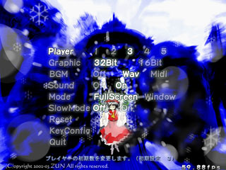
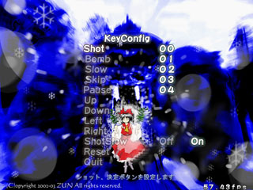

| ■オプション |
|---|
| タイトル画面でＯＰＴＩＯＮを選ぶとオプションに入れます |
| Ｐｌａｙｅｒ |
|
初期プレイヤー数を１〜５の間で変更できます 工場設定では３です |
| ＢＧＭ |
|
曲の再生を変更しします。 ＯＦＦ ： 曲は鳴らない ＷＡＶ ： 曲の再生にＷＡＶを使用します（推奨） ＭＩＤＩ： 曲の再生にＭＩＤＩ（sc-88pro)を使用します 体験版(Plus以外)では Wav は使用できませんので注意してください |
| ＳＯＵＮＤ |
|
効果音を変更します ＯＦＦ ： 効果音は鳴らない ＯＮ ： 効果音は鳴る |
| Ｇｒａｐｈｉｃ |
|
表示モードを変更します ３２Ｂｉｔ： 画面を３２Ｂｉｔにします １６Ｂｉｔ： 画面を１６Ｂｉｔにします 注）ウィンドウモードの場合、この値は無効になり、その時の表示モードを使用します |
| Ｍｏｄｅ |
|
ウィンドウタイプを変更します ＦｕｌｌＳｃｒｅｅｎ：フルスクリーンで動作します（推奨） Ｗｉｎｄｏｗ ：ウィンドウモードで動作します |
| Ｓｌｏｗ Ｍｏｄｅ |
|
スローモードにするかどうか選択します スローモードにすると、敵弾が増えたときにわざと処理落ちさせます ただし、このモードではスコア及び、リプレイの保存が出来ません。 |
| ＫｅｙＣｏｎｆｉｇ |
|
キーコンフィグできます パッドが存在しない場合、意味はありません |
| 初期状態に戻す |
|
工場出荷時設定に戻します |
| ＱＵＩＴ |
|
オプションから抜けます |

| ■キーコンフィグ |
|---|
| オプション画面でＫｅｙＣｏｎｆｉｇを選択するとキーコンフィグ画面に入れます。 ここでの操作は、上下移動、決定、キャンセルはキーコンフィグ前での操作になります 変更したい項目にカーソルを合わせ、設定したいボタンを押してください |
| Ｓｈｏｔ |
| ショット、決定ボタン |
| Ｂｏｍｂ |
| ボム、キャンセルボタン |
| Ｓｌｏｗ |
| 低速移動（Ｓｈｏｔボタンと同じボタンにすることが可能） |
| Ｐａｕｓｅ |
| ポーズ、ポーズ解除 |
| Ｓｋｉｐ |
| メッセージスキップ |
| 上 |
| 上移動（これに値を入れてもデフォルトのレバーは有効のまま、これも有効になります） |
| 下 |
| 下移動（これに値を入れてもデフォルトのレバーは有効のまま、これも有効になります） |
| 左 |
| 左移動（これに値を入れてもデフォルトのレバーは有効のまま、これも有効になります） |
| 右 |
| 右移動（これに値を入れてもデフォルトのレバーは有効のまま、これも有効になります） |
| ShotSlow |
| ショット押しっぱなしで低速移動にするかどうか |
| 初期状態に戻す |
| 工場出荷時設定に戻します |
| ＱＵＩＴ |
| オプションに戻ります |